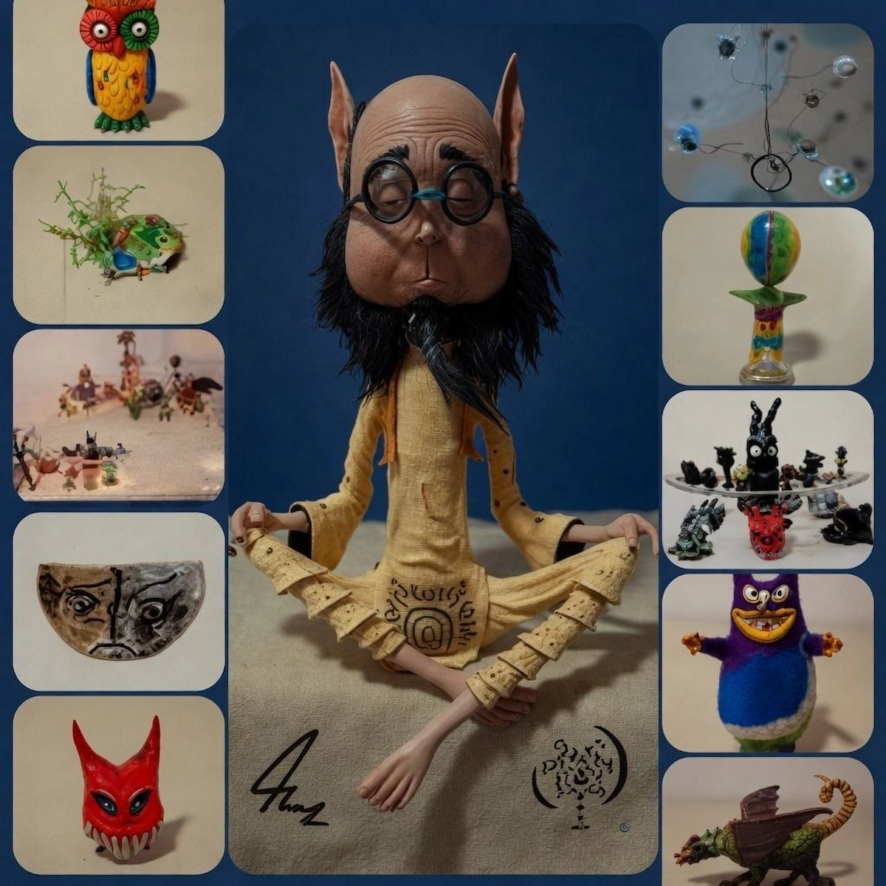
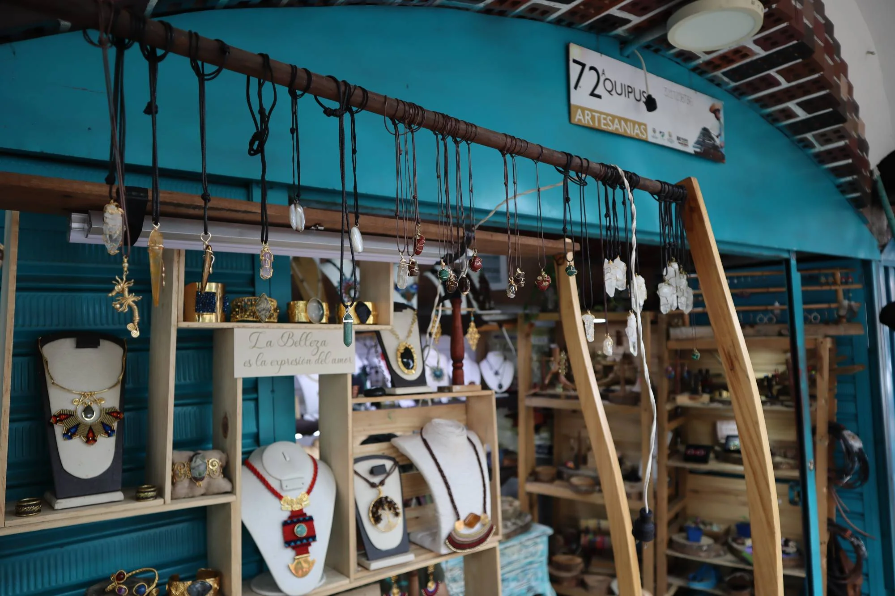
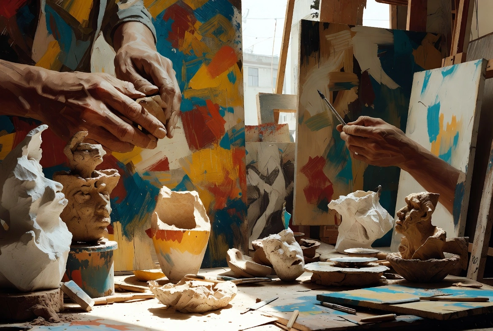
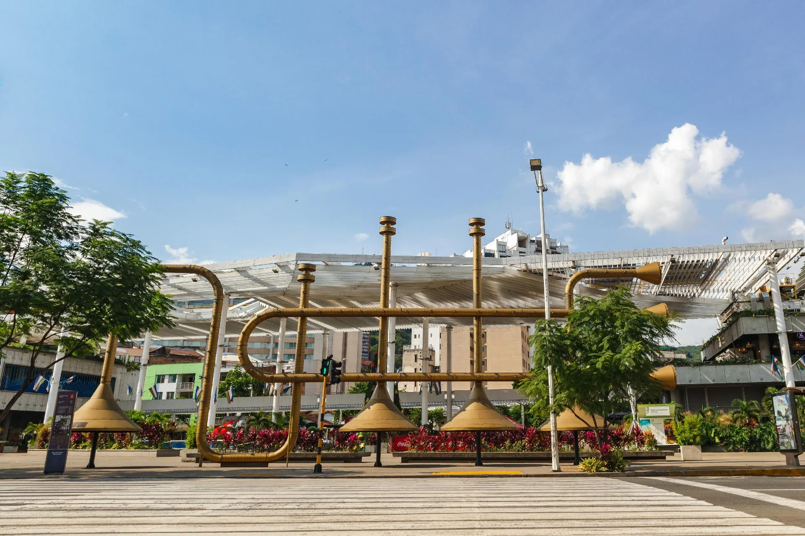
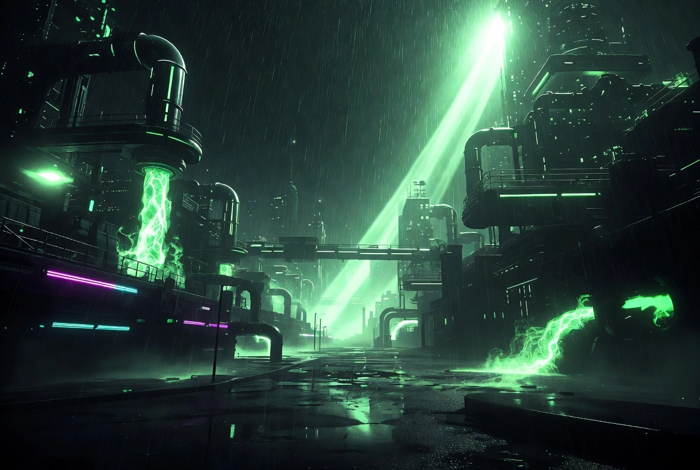

Mis Obras
Porcelanicrón y arcilla • 17 piezas

Porcelanicrón y arcilla • 17 piezas

$XX.XXX
Reproductor embebido (próximamente con música libre de derechos)
Viernes 25 de abril • 7:00 PM
Conversatorio + presentaciones en vivo

Últimas exposiciones y procesos creativos en la región.

Eventos, movimientos e identidad local que mueven la ciudad.

Influencia de GTA y FFVII en la estética urbana moderna.
Mi nombre es Oscar Fernando Salazar Toro. Tengo 28 años y mi vida ha sido un constante viaje de transformación a través de la geografía colombiana.
Originario de Ipiales, Nariño, crecí en el corregimiento de José María Hernández, rodeado del color y la música de los Carnavales de Negros y Blancos. Desde pequeño el arte formó parte de mí: lo que empezó con dibujos y figuras de plastilina, evolucionó hacia la escultura en porcelanicrón y arcilla.
Graduado de la Institución Educativa Los Héroes (Promoción 2015), recorrí ciudades como Bogotá, Medellín y Pereira hasta llegar a Cali hace cinco años, donde hoy considero mi hogar. Aquí me desempeñé como auxiliar de cocina, aprendiendo disciplina y precisión en la comida rápida, el ramen, el sushi y los asados.
Actualmente soy estudiante de Tecnología en Análisis y Desarrollo de Software y participo en un bootcamp intensivo enfocado en tecnologías modernas.
City Soul Echoes nace precisamente de esa convergencia: mis raíces artísticas, la disciplina forjada en la cocina y mi pasión por construir herramientas digitales que impulso al arte, el emprendimiento consciente y el bienestar en la comunidad.